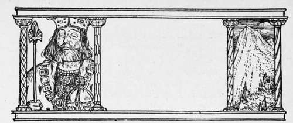
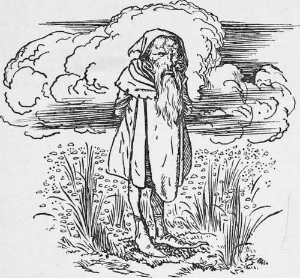

The King Of The Golden Mountain
Description
This section is from the book "Household Tales by Brothers Grimm", by Brothers Grimm. Also available from Amazon: Household Tales by Brothers Grimm.
The King Of The Golden Mountain
There was once a merchant who had only one child, a son, that was very young, and barely able to run alone. He had two richly-laden ships then making a voyage upon the seas, in which he had embarked all his wealth, in the hope of making great gains, when the news came that both were lost. Thus from being a rich man he became all at once so very poor that nothing was left to him but one small plot of land ; and there he often went in an evening to take his walk, and ease his mind of a little of his trouble.
One day, as he was roaming along in a brown study, thinking with no great comfort on what he had been, and what he now was, and was like to be, all on a sudden there stood before him a little rough-looking black dwarf. "Prithee, friend, why so sorrowful?" said he to the merchant; "what is it you take so deeply to heart?" "If you could do me any good I would willingly tell you," said the merchant. " Who knows but I may ?" said the little man: " tell me what ails you, and perhaps you will find I may be of some use." Then the merchant told him how all his wealth was gone to the bottom of the sea, and how he had nothing left but that little plot of land. " Oh! trouble not yourself about that," said the dwarf; " only undertake to bring me here, twelve years hence, whatever meets you first on your going home, and I will give you as much gold as you please." The merchant thought this was no great thing to ask; that it would most likely be his dog, or his cat, or something of that sort, but forgot his little boy Heinel: so he agreed to the bargain, and signed and sealed the bond, to do what was asked of him.
But as he drew near home, his little boy was so glad to see him that he crept behind him, and laid fast hold of his legs, and looked up in his face and laughed. Then the father started, trembling with fear and horror, and saw what it was that he had bound himself to do; but as no gold was come, he made himself easy, by thinking that it was only a joke that the dwarf was playing him, and that, at any rate, when the money came, he should see the bearer, and would not take it in.
About a month afterwards he went up stairs into a lumber-room to look for some old iron, that he might sell it and raise a little money; and there, instead of his iron, he saw a large pile of gold lying on the floor. At the sight of this he was overjoyed, and forgetting all about his son, went into trade again, and became a richer merchant than before.
Meantime little Heinel grew up, and as the end of the twelve years drew near the merchant began to call to mind his bond, and became very sad and thoughtful; so that care and sorrow were written upon his face. The boy one day asked what was the matter, but his father would not tell for some time; at last, however, he said that he had, without knowing it, sold him for gold to a little, ugly-looking, black dwarf, and that the twelve years were coming round when he must keep his word. Then Heinel said, " Father, give yourself very little trouble about that; I shall be too much for the little man."
When the time came, the father and son went out together to the place agreed upon: and the son drew a circle on the ground, and set himself and his father in the middle of it. The little black dwarf soon came, and walked round and round about the circle, but could not find any way to get into it, and he either could not, or dared not, jump over it. At last the boy said to him, "Have you anything to say to us, my friend, or what do you want?" Now Heinel had found a friend in a good fairy, that was fond of him, and had told him what to do; for this fairy knew what good luck was in store for him. "Have you brought me what you said you would ?" said the dwarf to the merchant. The old man held his tongue, but Heinel said again, "What do you want here?" The dwarf said, "I come to talk with your father, not with you." "You have cheated and taken in my father," said the son; "pray give him up his bond at once." "Fair and softly," said the little old man; "right is right. I have paid my money, and your father has had it, and spent it; so be so good as to let me have what I paid it for." "You must have my consent to that first," said Heinel; "so please to step in here, and let us talk it over." The old man grinned, and showed his teeth, as if he should have been very glad to get into the circle if he could. Then at last, after a long talk, they came to terms. Heinel agreed that his father must give him up, and that so far the dwarf should have his way: but, on the other hand, the fairy had told Heinel what fortune was in store for him, if he followed his own course; and he did not choose to be given up to his hump-backed friend, who seemed so anxious for his company.
So, to make a sort of drawn battle of the matter, it was settled that Heinel should be put into an open boat, that lay on the sea-shore hard by; that the father should push him off with his own hand, and that he should thus be set adrift, and left to the bad or good luck of wind and weather. Then he took leave of his father, and set himself in the boat; but before it got far off a wave struck it, and it fell with one side low in the water, so the merchant thought that poor Heinel was lost, and went home very sorrowful, while the dwarf went his way, thinking that at any rate he had had his revenge.
The boat, however, did not sink, for the good fairy took care of her friend, and soon raised the boat up again, and it went safely on. The young man sat safe within, till at length it ran ashore upon an unknown land. As he jumped upon the shore he saw before him a beautiful castle, but empty and dreary within, for it was enchanted. "Here," said he to himself, "must I find the prize the good fairy told me of." So he once more searched the whole palace through, till at last he found a white snake, lying coiled up on a cushion in one of the chambers.
Continue to:
Tags
fairy tales, children's stories, brothers grimm, household tales